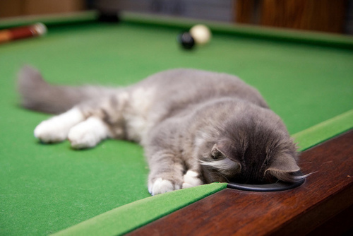

{% extends "bootstrap/base.html" %}
{% import "bootstrap/utils.html" as util %}
{% import "bootstrap/fixes.html" as fixes %}
{% import "bootstrap/wtf.html" as wtf %}

{% block content %}
{{util.flashed_messages(dismissible=True)}}

  <div class="container">
  <div class="row">
   <div class="col-md-7 col-md-offset-2">
    <div class="jumbotron">
      <h1>a cat a day</h1>
      <hr>
      <p>A simple flask app with a cron job that cycles cat pictures. Because we can. One cat every day. </p>
      <p>
        
      </p>
    </div></div></div>
{% endblock %}
{% block head %}
{{super()}}
{{fixes.ie8()}}
{% endblock %}

